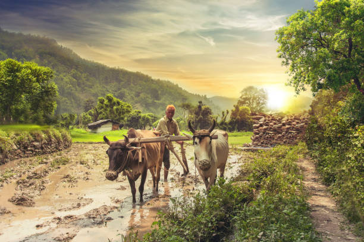
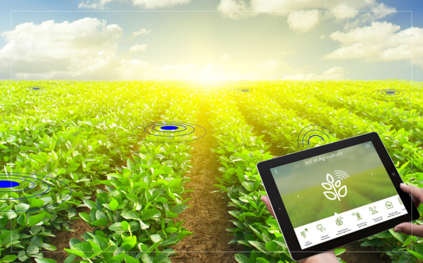

🌳 The Bread Winner Of The World 🌍



Water
Water is a critical input for agricultural production and plays an important role in food security.
Soil
Essential nutrients,water,oxygen and root support that our food-producing plants need to grow and flourish.
Seeds
Seed farmers grow a crops in a way that optimizes the quantity and quality of its seed.
Manure
Manure contains nitrogen, phosphorus, and other nutrients that plants need to grow.
Crops
Agriculture,a plant or plant product that can be grown and harvested extensively for profit or subsistence.
Farmer Equipments
Farm machinery, mechanical devices, including tractors and implements, used in farming to save labour.

🙁 Not Accepting me...Toady !!! Why ?
🌳 Farmers must meet the changing needs of our planet and the expectations of regulators,
consumers, and food processors and retailers.
🌳 There are increasing pressures from climate change, soil erosion and biodiversity loss and from consumers’
changing tastes in food and concerns about how it is produced and the natural world that
farming works with – plants, pests and diseases – continue to pose their own challenges.
🌳 While modern agriculture provides a large number of solutions,
the outcome is not always the same because each farm is unique: different landscapes, soils,
available technology and potential yields.
🌳 Farmers need to deal with many problems, including how to: Cope with climate change, soil erosion and biodiversity loss
Satisfy consumers’ changing tastes and expectations
Meet rising demand for more food of higher quality Invest in farm productivity
Adopt and learn new technologies Stay resilient against global economic factors
Inspire young people to stay in rural areas and become future farmers.

🚀 Future Farming
🔖 Agriculture in India is livelihood for a majority of the population and can never be underestimated. Although its contribution in the gross domestic product (GDP) has reduced to less than 20 per cent and contribution of other sectors increased at a faster rate, agricultural production has grown. This has made us self-sufficient and taken us from being a begging bowl for food after independence to a net exporter of agriculture and allied products. Total foodgrain production in the country is estimated to be a record 291.95 million tonnes, according to the second advance estimates for 2019-20. This is news to be happy about but as per the estimates of Indian Council for Agricultural Research (ICAR), demand for foodgrain would increase to 345 million tonnes by 2030.
🔖 Increasing population, increasing average income and globalisation effects in India will increase demand for quantity, quality and nutritious food, and variety of food. Therefore, pressure on decreasing available cultivable land to produce more quantity, variety and quality of food will keep on increasing.
🔖 India is blessed with large arable land with 15 agro-climatic zones as defined by ICAR, having almost all types of weather conditions, soil types and capable of growing a variety of crops. India is the top producer of milk, spices, pulses, tea, cashew and jute, and the second-largest producer of rice, wheat, oilseeds, fruits and vegetables, sugarcane and cotton.
🔖 The reforms towards privatisation, liberalisation and globalisation affected inputs market at a faster pace. Agricultural marketing reforms after 2003 made changes in marketing of agricultural outputs by permitting private investment in developing markets, contract farming and futures trading, etc. These amendments in marketing acts have brought about some changes but the rate is less.
🔖 Along with this, the information technology revolution in India, new technologies in agriculture, private investments especially on research and development, government efforts to rejuvenate the cooperative movement to address the problems of small holdings and small produce etc are changing face of agriculture in India.
Many startups in agriculture by highly educated young ones show that they are able to understand the high potential of putting money and efforts in this sector. Cumulative effects of technology over the next decade will change the face of agriculture.
All the constraints in agriculture make the productivity and returns complex but still a high untapped potential is there in India’s agriculture sector.
🔖 Advantageous weather and soil conditions, high demand for food, untapped opportunities, various fiscal incentives given by the government for inputs, production infrastructure, availability of cheap credit facilities and for marketing and export promotion are attracting many individuals, big companies, startups and entrepreneurial ventures to do a lot of investments on innovations, inventions, research and development and on other aspects of business.
The efforts are being done to convert all the challenges in agriculture into opportunities and this process is the future of agriculture.
🚜 Technical Farming
🛠️ Technology can answer most difficulties farmers face. It can assist them with predicting climate all the more precisely, decrease the use of water, increase yield and their net profit margins
The change in Indian agriculture began with the Green Revolution, which was trailed by accomplishments of large achievements: Blue revolution, white revolution, yellow and Bio-Technology revolutions. In India, agriculture is the core sector for food security, nutritional security, and sustainable development & for poverty alleviation.
🛠️ It contributes approx. 18 % of GDP and practically 40% of total rural NDP (Net Domestic Product). Around 64% of the total labor force is occupied with horticulture or agribusiness based businesses. After independence, there has been noteworthy development in Indian agriculture with the grain production ascending to 273.83 million tons this year. All things considered, there are enormous challenges to be analyzed to enhance the agricultural growth in India.
🛠️ Difficulties
⚙️ Conventional Farming related Issues
A lot has been done to improve the cultivation, yet at the same time, Indian agriculture relies upon traditional farming techniques, natural waters irrigation, and development techniques. Farmers depend on ground waters, rivers and rains. Over-pumping of water has led to the falling in groundwater levels in certain parts, where water-logging is leading to salty soil. In rain-fed areas, soil disintegration and floods are significant dangers to Indian farmers all over the country.
⚙️ Low Agricultural Productivity
Indian agriculture can possibly increase farm-productivity and yield. There has been a consistent adoption in hybrid and genetically altered crops, seed quality, irrigation techniques, crop diversification, and value chains. However, the utilization of technology utilizing sensors and GIS-based soil, climate prediction, water assets information, mobile-based farming, broad market data information and data services and automation of farming using robots seems unachievable.
⚙️ Lack of Knowledge
The agriculture community is loaded with other difficulties as well. The biggest trouble is that the farmers don’t get the price they deserve for their produce. This is basically a result of numerous intermediaries. Lower returns compel them to take credits that they can’t support, driving them further into poverty. They don’t have access to powerful and better quality pesticides to protect their crops from bugs, diseases, weed and mites. Also, Indian farmers do not have a way to improve crop yield or information to comprehend soil health.
Indian farmers additionally don’t have the knowledge or technology to utilize modern irrigation methods as found in nations, for example, China, the US, and so forth.
Technology can answer most difficulties farmers face. It can assist them with predicting climate all the more precisely, decrease the use of water, increase yield and their net profit margins.
⚙️ Precise Predictions
Big data can give farmers the information they have to create high quality, desirable crops. They can utilize data to decide the best seeds and other agri-items to use to get ideal outcomes. Artificial intelligence can assist them with foreseeing weather conditions and plan accordingly. They can likewise use cutting-edge e-platforms to chop down middle people and legitimately arrive at merchants and demand the right price for their goods.
⚙️ Artificial Intelligence
The deployment and development of AI in agriculture is increasing because of the accessibility of the precision data. Artificial intelligence-based modern and cutting-edge tools can help get precision to large-scale farming. Farm equipment can plant various densities of seeds and apply varying amounts of fertilizer in different pieces of a field. While AI has become a backbone of the tech network, a significant number of the major agriculture input companies presently can’t seem to energetically seek after AI applications in farming. Utilizing remote sensing and GIS applications can effectively exhibit agricultural production.
⚙️ Nano Science and Geo-Spatial Farming
Nano Science is a method which gives data to the farmers through the utilization of smart delivery systems and nano sensors concerning whether plants are taking water and other essential inputs in appropriate quantities. Moreover, it likewise gives data about the quality of food harvested. By adopting geo-spatial cultivating, agricultural production can be expanded on a large-scale. Higher production can be accomplished based on factors like weeds, nature of the soil and its dampness content, production (ripeness), rate of seeds, need of manures and other such factors.
⚙️ Big Data
Big data has now become a key player for the utilization of technology for agricultural development. Big data plays a significant function in agro-business by improving harvest yield, overseeing risk, and increasing efficiency. Data given to farmers can assist them with settling on timely decisions which can provide astounding outcomes. Soil sampling data can assist farmers with knowing the expected yield on their farm, efficient use of fertilizers and pesticides which can reduce their input cost.
⚙️ Deep Learning
Technology, for example, deep learning can play a crucial part in giving significant data to farmers on different themes, for example, soil health, genetic engineering of seeds, best practices for planting and picking crops, checking the health of the animals, getting guidelines and approaches, getting the right financial aid and suitable government schemes to leverage.
⚙️ Drones
They help in increasing production by diminishing expenses and misfortune in agricultural produce by supervision work. Progressed sensors, the ability of digital imaging, soil investigation, crop spraying, crop monitoring, the examination of the health of yields including fungus infection is conceivable with the assistance of drones.
📋 Conclusion
Recently in Rajasthan, drones have ended up being significant in shielding agricultural produce from locust attacks. We can change this challenge of the overall spread of the Corona pandemic into an opportunity as due to the epidemic, there was a concern of lack of food items in the whole world. Because of this worry, there was a major gap being seen in supply and demand since individuals started storing food items. India can utilize this scenario as an opportunity with the goal that it can pave the way of economic prosperity for our farmers.